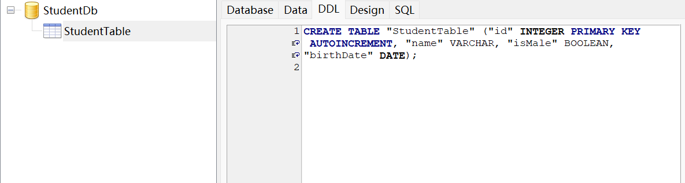

IRdbCore 简介
引言
在Java网络编程领域, Spring JPA,MyBatis,Herbinate 等一系列的数据库管理框架令我们耳目一新。通过简单的定义Bean，定义 Repositry, 定义数据库如何连接，就可以完成对数据库，数据库表，以及数据库操作的管理，甚为省事。
而在C++ 编程领域，我们想连接一个数据库，需要自己手动实现这一系列的操作，操作之繁琐，让人望而生畏。而 IRdbCore则是为了解决这个问题而提出的。
IRdbCore 通过 IWebCore封装提供的反射封装，可以完美的完成对于Bean的封装，可以很轻易的将数据库查询结果转换为C++类型，可以将C++类型与 JSON 类型相互转换。可以通过继承 IRdbTableModelInterface基类来继承基类中的数据库的增删改查。可以通过数据库基类以及Dialect(不同数据库使用不同的 SQL 方言) 来轻松实现很多不同类型数据库的连接。可以通过内置工具类来实现数据查询之后的解析操作等一系列的内容来提高用户编码效率。
特性
- *支持对象关系映射*
通过对C++类进行注解 将 C++对象和数据库表进行映射, 实现对象与关系型数据库的相互映射。
- *持久化上下文， 简化的数据访问层*
IRdbCore 提供了持久化上下文的概念，负责管理实体的生命周期， 实现增加， 删除，修改，查找等一系列的操作，开发者可以通过相关接口而不是显式的编写实现代码来执行数据库操作。
- *支持分页，排序，聚合，和条件查询等操作。*
IRdbCore 内建支持分页，排序，聚合和条件查询，简化查询的编写。
- *易于扩展*
允许用户手动编写Sql 语句，实现用户自己想要的数据库操作。
- *多数据库支持*
IRdbCore 内置支持Sqlite, MySql, MariaDb, SqlServer, PostgreSql等一系列的数据库类型。用户也可以通过内置接口自由扩展出更多的数据库支持。
- *跨平台支持。*
任何支持Qt运行的平台均可以支持该框架， 包含但不限于Linux, Windows, Mac, Android 等平台的操作。
- *方便的工具类进行查询转换*
IRdbCore 提供相关的工具类将查询结果过一步转换成用户需要的数据类型
- *使用 异常和 Optional 返回值进行异常管理。*
对于数据库的各种异常和用户的不当操作，框架会抛出异常；对于用户希望有数据，但是实际未查询到的数据，会返回 Optional
- *方便的与其他框架进行集成*
IRdbCore可以方便的与其他的框架如 IHttpCore, ICmdCore 无缝集成，提供数据库操作的能力。
- 运行前期的逻辑检查功能
IRdbCore会在最开始程序运行的时候，检查诸如实体的定义，数据库是否存在，可连接等一系列逻辑条件。减少执行中的错误。
示例
我们写一个简单的示例，并配以讲解说明该框架的用法
引入框架
本框架目前是内嵌在*IWebCore*框架当中, 并没有独立出来。所以我们直接创建一个 *IWebCore* 项目，创建的 pro文件如下所示。
| QT -= gui
CONFIG += c++17 console
CONFIG -= app_bundle
include(../../src/IWebCore.pri)
SOURCES += \
SqliteDb.cpp \
Student.cpp \
StudentModel.cpp \
TestStudent.cpp \
main.cpp
HEADERS += \
SqliteDb.h \
Student.h \
StudentModel.h \
TestStudent.h
|
在第3行我们看见我们的项目是基于 *c++17*进行开发编译的。
在第6行，我们引入 IWebCore.pri。这里的目录是相对目录，这个 pri 引入之后，我们就将 IRdbCore 引入了进来。
在8-19行中中，我们创建了一个 *main.cpp* 文件，还有三个类，*Student* 类， *SqliteDb* 类 和 *StudentModel* 类，以及一个单元测试类， *TestStudent* 类。
main 文件
我们的 main.cpp 如下
| #include <core/application/IAsioApplication.h>
#include <core/application/IApplicationAnnomacro.h>
$EnableUnitTest(true)
int main(int argc, char *argv[])
{
IApplication app(argc, argv);
return app.run();
}
|
在第4行，我们使用$EnableUnitTest这个宏注解来开启单元测试
第7 行，我们初始化一个 IApplication 对象。该对象提供注册任务的执行功能，并启动一个事件循环。
第8行开启IApplication的事件循环。
这样我们的main函数就写好了。
Table类定义
Table 类是一个c++ 类，通过继承 IRdbTableInterface 得来。在类中通过注解，将类添加上更多的额外信息，以便于将类和数据库表映射起来。同时类提供了 和 json 相互转换的功能。
下面代码是定义 Student 的 头文件和 实现文件
| #pragma once
#include "rdb/entity/IRdbTableInterface.h"
class Student : public IRdbTableInterface<Student>
{
Q_GADGET
$AsTable(StudentTable)
public:
Student() = default;
$PrimaryKey(id)
$AutoIncrement(id)
$ColumnDeclare(qlonglong, id)
qlonglong id{};
$ColumnDeclare(QString, name)
QString name;
$ColumnDeclare(bool, isMale)
bool isMale{ true};
$ColumnDeclare(QDate, birthDate)
QDate birthDate{QDate::currentDate()};
};
|
先说实现文件 Student.cpp。是的你没有看错，这个实现文件就只有一行，将头文件包含进来。但是这个文件是不可省略的。具体原因是在c++编译的过程中，编译的是 .cpp 类型的文件，然后将编译结果进行链接，而不是直接编译 .h 文件。头文件的作用是作为被包含文件，提供给 实现文件一些公共的接口等内容的。我们在实现文件中包含了头文件，那么该头文件就会被编译生成编译内容。
我们的 IRdbTableInterface 继承了 IInstantTaskUnit 这个类，这个类的作用就是在程序最开始运行的时候静态初始化并执行一些代码，将该类注册进入我们的系统当中，通过静态初始化的方式我们可以间接实现IOC(控制反转)， 进而将类和类之间进行解耦。这个就是我们在 main.cpp 文件中没有写入比如 Table 类型注册信息的原因。通过静态初始化功能，我们将功能隔离开来，并通过框架进行统一管理。
再回到我们的 头文件Student.h 中来，进入一些关键信息。做讲解
第5行我们创建对象，继承IRdbTableInterface, 注意这个类需要通过CRTP 进行创建。
第7行 通过Q_GADGET我们将Qt的元对象信息引入到类当中。关于 Q_GADGET 和元对象信息请参阅 Q_GADGET与元对象 的内容。这行代码必须要被添加，不添加就会报错。通过这行代码，我们后面的宏注解就可以进行信息的注册。
第8行$AsTable(StudentTable)宏注解，表示这个类对应的数据库表名叫做 StudentTable。无论是创建表还是增删改查表，我们使用的表明都是 $AsTable里面定义的表名 StudentTable。 这个宏注解可以省略，如果省略，我们的数据库表名将映射为该类的类名。
第14， 17， 20， 23 行代码ColumnDelcare 是定义数据库表的列，他是一个宏注解，参数分别是 类型和名称。如果类成员变量没有该宏注解，则不会被映射到数据库表列，也不能和json相互转换。
第12 行 $PrimaryKey(id) 将 id 申明为主键。添加该字段则是告诉系统，我们的主键是 id,在之后的创建数据库表中，会申明id 为 PRIMARY KEY 在按照主键进行查询的时候，会使用该字段名称进行查询。
第13行 $AutoIncrement(id) 表示 id 是一个自增变量。这是用于生成自动生成数据库表，在 变量前面添加上如 AUTO INCREMENT 这样的限定，具体生成的限定和数据库类型相关，比如 SqlServer 会使用 IDENTITY(1,1) 而 Postgres 则会用 BIGSERIAL 和 SERIAL 作为限定。
在这个类中，我们使用了 *qlonglong, QString, QDate 和 bool* 四种数据类型，这四种数据类型会被映射为相对应的 sql 数据类型。此外我们还有更多的可映射的数据类型。
这样我们的实体(Entity) 就创建完成了。更多功能可以参考 *Entity* 相关的内容。
定义数据库
头文件SqliteDb.h 和实现如下：
| // SqliteDb.h
#pragma once
#include "rdb/database/IRdbSqliteDatabaseInterface.h"
class SqliteDb : public IRdbSqliteDatabaseInterface<SqliteDb>
{
public:
SqliteDb() = default;
public:
virtual IRdbSource getSource() const final;
};
|
实现文件 SqliteDb.cpp 实现文件如下
| #include "SqliteDb.h"
IRdbSource SqliteDb::getSource() const
{
IRdbSource source;
source.databaseName = "StudentDb.db";
source.driverName = "QSQLITE";
return source;
}
|
头文件中第6 行我们定义个SqliteDb, 通过 CRTP 的方式继承 *IRdbSqliteDatabaseInterface*, 在第12 行，我们重载 IRdbSource getSource() const 方法，在.cpp 文件里面定义该方法，并返回他的连接信息。
在程序运行的时候，我们会自动连接或创建 名为 StudentDb.db 的Sqlite数据库。如果我们想创建其他类型的数据库的，可以替换掉我们的基类，并重载实现方法。
Model 定义
接下来我们将我们定义的 Table 和我们定义的 DB 连接起来，并提供基本的增删改查功能。这个类的名称是 StudentModel
StudentModel.h 如下
| #pragma once
#include "rdb/model/IRdbTableModelInterface.h"
#include "Student.h"
#include "SqliteDb.h"
class StudentModel : public IRdbTableModelInterface<StudentModel, Student, SqliteDb>
{
public:
StudentModel() = default;
};
|
StudentModel.cpp如下
| #include "StudentModel.h"
|
StudentModel.h 简单的定义一个 StudentModel 类，以CRTP 的方式继承于 IRdbTableModelInterface。这里基类我们看到有三个模板参数。第一个是StudentModel这个是我们的类名。第二个参数是 Student 这个是我们的实体名称。第三个SqliteDb是我们的数据库类名。顾名思义，这个类的目的是将 Student实体和我们的数据库SqliteDb联系起来。
在IRdbTableModelInterface 中，我们定义了比如 insertOne, findById, updateOne, deleteAll 等等一系列的函数。通过继承关系，StudentModel可以直接使用这些函数进行操作。此外，若有特殊的需求，用户也可以在StudentModel中定义自己的操作。
是的，实现文件依然是将头文件引用了以下，此外其他的代码一概没有。这个的目的是在 IRdbTableModelInterface 中有一个 $task() 函数，我们将这个函数注入到我们的Task 系统当中，执行必要的初始化工作，比如检查和创建表项等。
在这个时候，我们的一个完整的逻辑就实现了，我们可以运行以下程序，会得到如下日志的输出：
| _____ _ _ _ _____
|_ _|| | | | | | / __ \
| | | | | | ___ | |__ | / \/ ___ _ __ ___
| | | |/\| | / _ \| '_ \ | | / _ \ | '__|/ _ \
_| |_ \ /\ /| __/| |_) || \__/\| (_) || | | __/
\___/ \/ \/ \___||_.__/ \____/ \___/ |_| \___|
data base opened
Sqlite CREATE TABLE IF NOT EXISTS "StudentTable" ("id" INTEGER PRIMARY KEY AUTOINCREMENT, "name" VARCHAR, "isMale" BOOLEAN, "birthDate" DATE)
SqliteDb CREATE TABLE: StudentTable
|
日志上我们打开了数据库，并生成一个创建语句,并执行语句，创建了StudentTable 的数据库表。
我们在程序目录下可以找到这个数据库，通过SqliteExpert 打开则会看到生成了该表。

单元测试
在上面我们已经完成了整个功能。接下来我们创建一个单元测试，来测试我们的功能。
TestStudent.h
| #pragma once
#include "core/test/IUnitTestInterface.h"
class TestStudent : public IUnitTestInterface<TestStudent, false>
{
Q_OBJECT
public:
TestStudent() = default;
public slots:
void testInsert();
void testMultiInsert();
void testFind();
void testFindById();
void testUpdateOne();
void testDeleteOne();
};
|
TestStudent.cpp
| #include "TestStudent.h"
#include "StudentModel.h"
void TestStudent::testInsert()
{
Student student;
student.name = "YueQichu";
student.isMale = true;
student.birthDate = QDate(2022,10,12);
StudentModel::instance().insertOne(student);
Q_ASSERT(StudentModel::instance().count() == 1);
qDebug() << student.id;
}
void TestStudent::testMultiInsert()
{
QList<Student> students;
for(int i=0; i<10; i++){
Student student;
student.name = "YueQichu_" + QString::number(i);
student.isMale = true;
student.birthDate = QDate(2022,10,12).addDays(i);
students.append(student);
}
StudentModel::instance().insertAll(students);
Q_ASSERT(StudentModel::instance().count() == 11);
}
void TestStudent::testFind()
{
auto students1 = StudentModel::instance().findAll(IRdb::whereEqual(Student::$field_id, 1));
Q_ASSERT(students1.length() == 1);
auto students2 = StudentModel::instance().findAll();
Q_ASSERT(students2.length() == 11);
for(const Student& student : students2){
Q_ASSERT(student.name.startsWith("YueQichu"));
auto offset = QDate(2022,10,12).daysTo(student.birthDate);
Q_ASSERT(offset <10 && offset >=0);
}
qDebug().noquote() << QString::fromStdString(IJsonUtil::toJson(StudentModel::instance().findAllByIds({1,2,3,5})).dump(4));
}
void TestStudent::testFindById()
{
IResult<Student> student = StudentModel::instance().findById(9);
if(student){
Q_ASSERT(student->id == 9);
}else{
Q_ASSERT(false);
}
}
void TestStudent::testUpdateOne()
{
IResult<Student> student = StudentModel::instance().findById(8);
if(student){
Student& bean = *student;
bean.name = "YueKeyuan";
StudentModel::instance().updateOne(bean);
Q_ASSERT(StudentModel::instance().findAll(IRdb::whereEqual(Student::$field_name, "YueKeyuan").count() == 1));
}else{
Q_ASSERT(false);
}
}
void TestStudent::testDeleteOne()
{
StudentModel::instance().deleteById(2);
Q_ASSERT(StudentModel::instance().count() == 10);
}
|
上面的测试代码比较长，但也无需解释。测试通过。
日志输出我也一并粘贴下来,方便用户查看
| 15:21:34: Starting D:\code\build-IWebCore-Desktop_Qt_5_14_2_MSVC2017_64bit-Debug\unittest\Student\debug\Student.exe ...
_____ _ _ _ _____
|_ _|| | | | | | / __ \
| | | | | | ___ | |__ | / \/ ___ _ __ ___
| | | |/\| | / _ \| '_ \ | | / _ \ | '__|/ _ \
_| |_ \ /\ /| __/| |_) || \__/\| (_) || | | __/
\___/ \/ \/ \___||_.__/ \____/ \___/ |_| \___|
data base opened
Sqlite CREATE TABLE IF NOT EXISTS "StudentTable" ("id" INTEGER PRIMARY KEY AUTOINCREMENT, "name" VARCHAR, "isMale" BOOLEAN, "birthDate" DATE)
SqliteDb CREATE TABLE: StudentTable
********* Start testing of TestStudent *********
Config: Using QtTest library 5.14.2, Qt 5.14.2 (x86_64-little_endian-llp64 shared (dynamic) debug build; by MSVC 2017)
PASS : TestStudent::initTestCase()
QDEBUG : TestStudent::testInsert() Sqlite INSERT INTO "StudentTable" (name, isMale, birthDate) VALUES (:name, :isMale, :birthDate)
QDEBUG : TestStudent::testInsert() Sqlite SELECT count(1) FROM "StudentTable"
QDEBUG : TestStudent::testInsert() 0
PASS : TestStudent::testInsert()
QDEBUG : TestStudent::testMultiInsert() Sqlite INSERT INTO "StudentTable" (name, isMale, birthDate) VALUES (:name_0, :isMale_0, :birthDate_0), (:name_1, :isMale_1, :birthDate_1), (:name_2, :isMale_2, :birthDate_2), (:name_3, :isMale_3, :birthDate_3), (:name_4, :isMale_4, :birthDate_4), (:name_5, :isMale_5, :birthDate_5), (:name_6, :isMale_6, :birthDate_6), (:name_7, :isMale_7, :birthDate_7), (:name_8, :isMale_8, :birthDate_8), (:name_9, :isMale_9, :birthDate_9)
QDEBUG : TestStudent::testMultiInsert() Sqlite SELECT count(1) FROM "StudentTable"
PASS : TestStudent::testMultiInsert()
QDEBUG : TestStudent::testFind() Sqlite SELECT * FROM "StudentTable" WHERE id = :id_0
QDEBUG : TestStudent::testFind() Sqlite SELECT * FROM "StudentTable"
QDEBUG : TestStudent::testFind() Sqlite SELECT * FROM "StudentTable" WHERE id IN ( :id_1, :id_2, :id_3, :id_4)
QDEBUG : TestStudent::testFind() [
{
"birthDate": "2022-10-12",
"id": 1,
"isMale": true,
"name": "YueQichu"
},
{
"birthDate": "2022-10-12",
"id": 2,
"isMale": true,
"name": "YueQichu_0"
},
{
"birthDate": "2022-10-13",
"id": 3,
"isMale": true,
"name": "YueQichu_1"
},
{
"birthDate": "2022-10-15",
"id": 5,
"isMale": true,
"name": "YueQichu_3"
}
]
PASS : TestStudent::testFind()
QDEBUG : TestStudent::testFindById() Sqlite SELECT * FROM "StudentTable" WHERE id = :id_5
PASS : TestStudent::testFindById()
QDEBUG : TestStudent::testUpdateOne() Sqlite SELECT * FROM "StudentTable" WHERE id = :id_6
QDEBUG : TestStudent::testUpdateOne() Sqlite UPDATE "StudentTable" SET name= :name, isMale= :isMale, birthDate= :birthDate WHERE id = :id
QDEBUG : TestStudent::testUpdateOne() Sqlite SELECT * FROM "StudentTable" WHERE name = :name_7
PASS : TestStudent::testUpdateOne()
QDEBUG : TestStudent::testDeleteOne() Sqlite DELETE FROM "StudentTable" WHERE id = :id_8
QDEBUG : TestStudent::testDeleteOne() Sqlite SELECT count(1) FROM "StudentTable"
PASS : TestStudent::testDeleteOne()
PASS : TestStudent::cleanupTestCase()
Totals: 8 passed, 0 failed, 0 skipped, 0 blacklisted, 25ms
********* Finished testing of TestStudent *********
15:21:34: D:\code\build-IWebCore-Desktop_Qt_5_14_2_MSVC2017_64bit-Debug\unittest\Student\debug\Student.exe exited with code 0
|
补充
之前是使用 IOrmCore作为名称，Orm的意思是 *Object-Relational Mapping* 是对象关系映射，我们之后还会有非关系型数据库的功能，如 *IRedisCore*, *IMongoDbCore,* 等一系列的功能， 所以我们为了对等的原则， 我们将名称改为 *IRdbCore*. IRdbCore表示这个库将会管理所有的关系型数据。